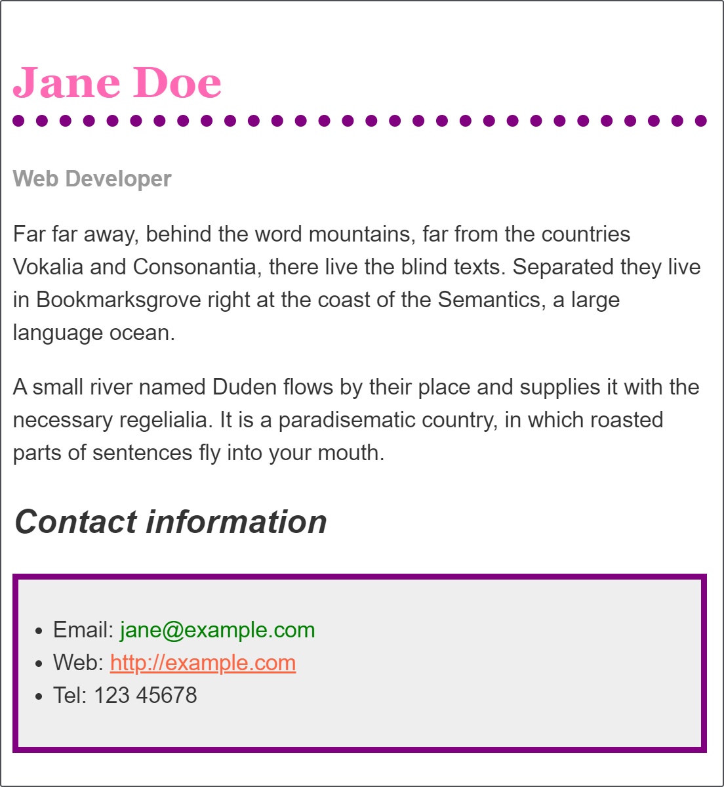

{{LearnSidebar}}{{PreviousMenu("Learn/CSS/First_steps/How_CSS_works", "Learn/CSS/First_steps")}}
With the things you have learned in the last few lessons you should find that you can format simple text documents using CSS, to add your own style to them. This assessment gives you a chance to do that.
| Prerequisites: | Before attempting this assessment you should have worked through the rest of the CSS basics module, and also have an understanding of HTML basics (study Introduction to HTML). |
|---|---|
| Objective: | To have a play with some CSS and test your new-found knowledge. |
You can work in the live editor below, or you can download the starting point to work with in your own editor. This is a single page with the HTML, plus the starting point CSS in the head of the document. If you prefer you could move this CSS to a separate file when you create the example on your local computer. Alternatively use an online tool such as CodePen, jsFiddle, or Glitch to work on the tasks.
Note: If you get stuck, then ask us for help — see the Assessment or further help section at the bottom of this page.
The following live example shows a biography, which has been styled using CSS. The CSS properties that I have used are as follows — each one links to its property page on MDN, which will give you more examples of its use.
I have used a mixture of selectors, styling elements such as h1 and h2, but also creating a class for the job title and styling that.
Use CSS to change how this biography looks by changing the values of the properties I have used.
hotpink.purple.ul used for the contact details a {{cssxref("background-color")}} of #eeeeee, and a 5px solid purple {{cssxref("border")}}. Use some {{cssxref("padding")}} to push the content away from the border.green on hover.You should end up with something like this image.

Afterwards try looking up some properties not mentioned on this page in the MDN CSS reference and get adventurous!
Remember that there is no wrong answer here — at this stage in your learning you can afford to have a bit of fun.
{{EmbedGHLiveSample("css-examples/learn/getting-started/biog.html", '100%', 1600)}}
If you would like your work assessed, or are stuck and want to ask for help:
Congratulations on finishing this first module. You should now have a good general understanding of CSS, and be able to understand much of what is happening in a stylesheet. In the next module, CSS building blocks, we will go on to look at a number of key areas in depth.
{{PreviousMenu("Learn/CSS/First_steps/How_CSS_works", "Learn/CSS/First_steps")}}